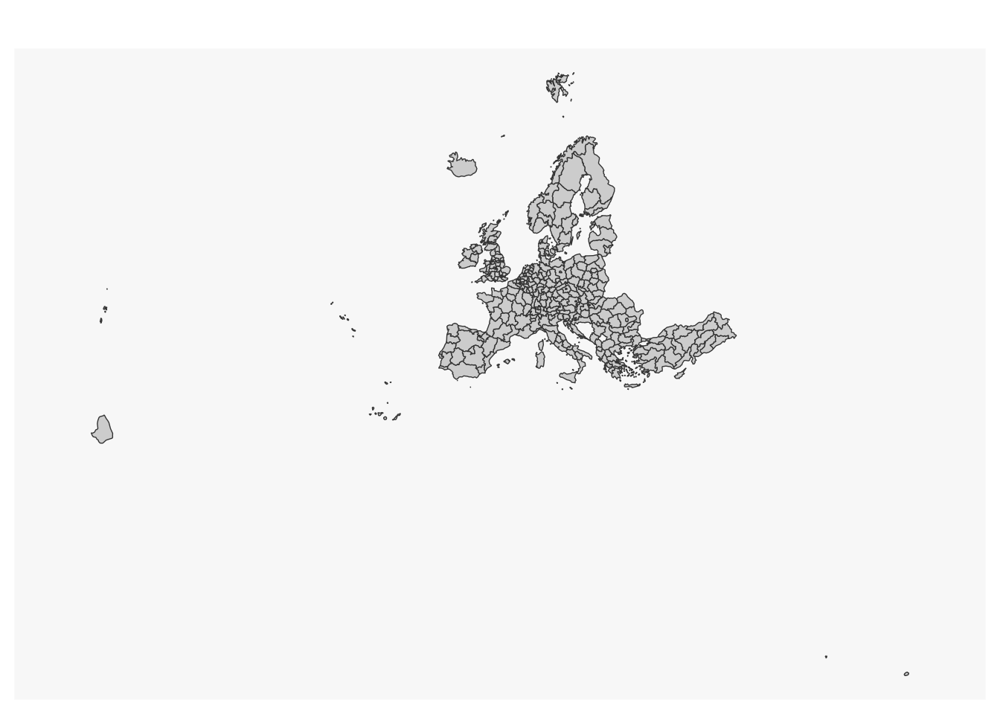
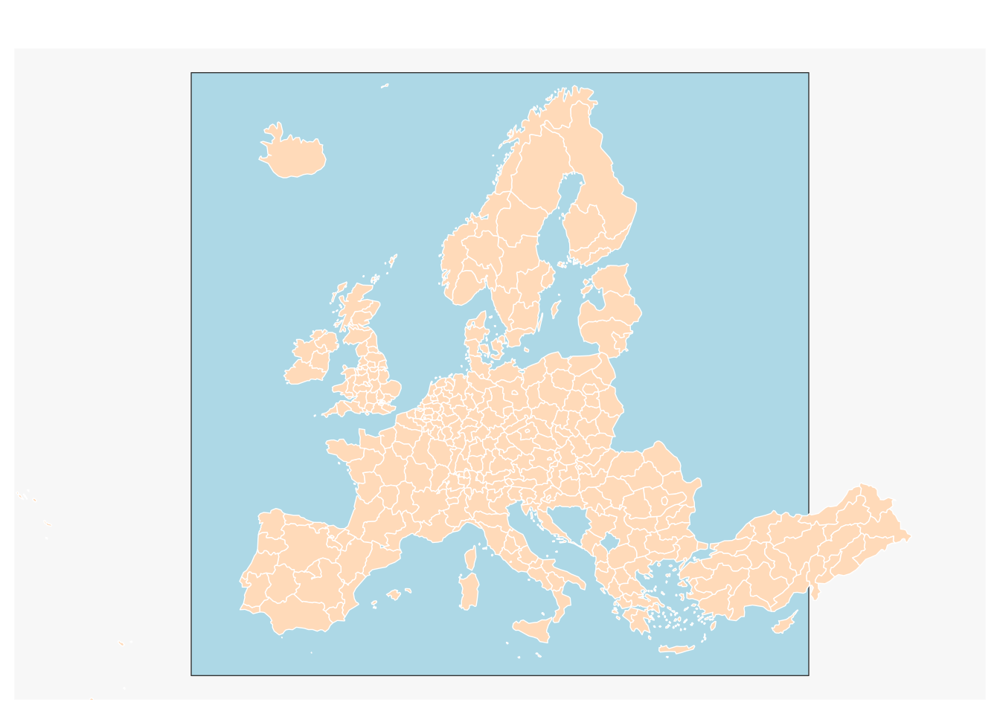
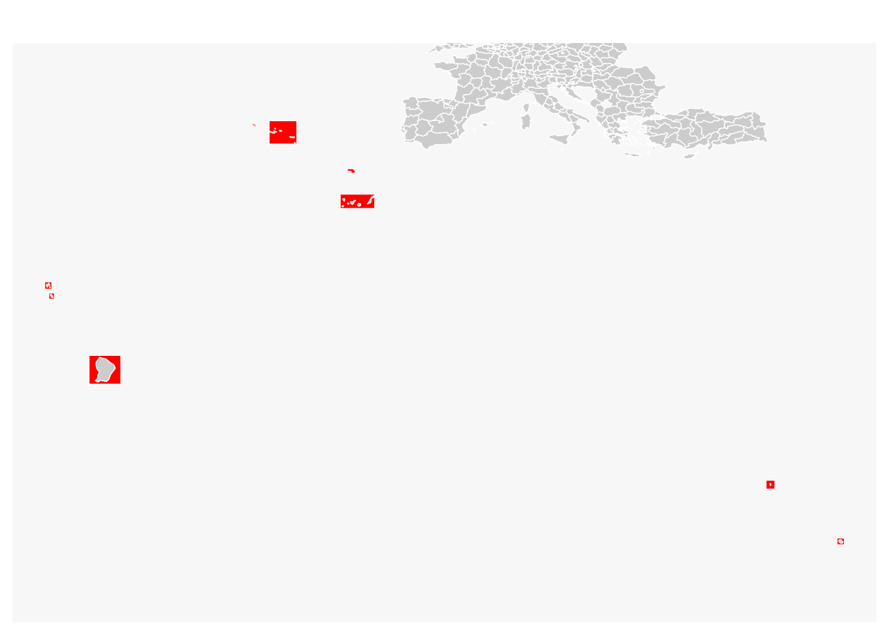
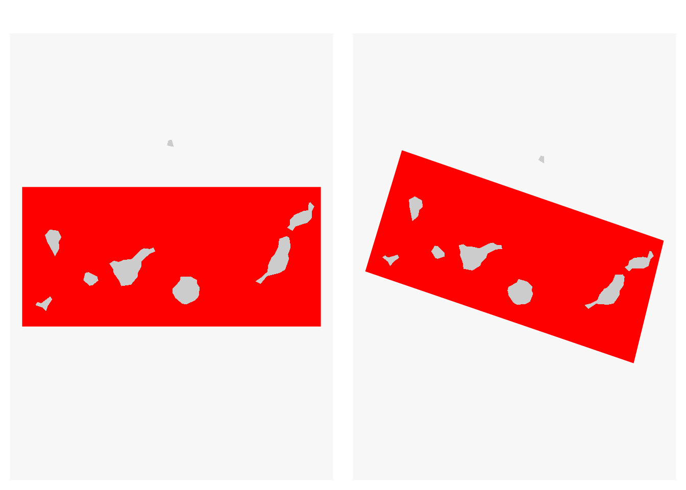
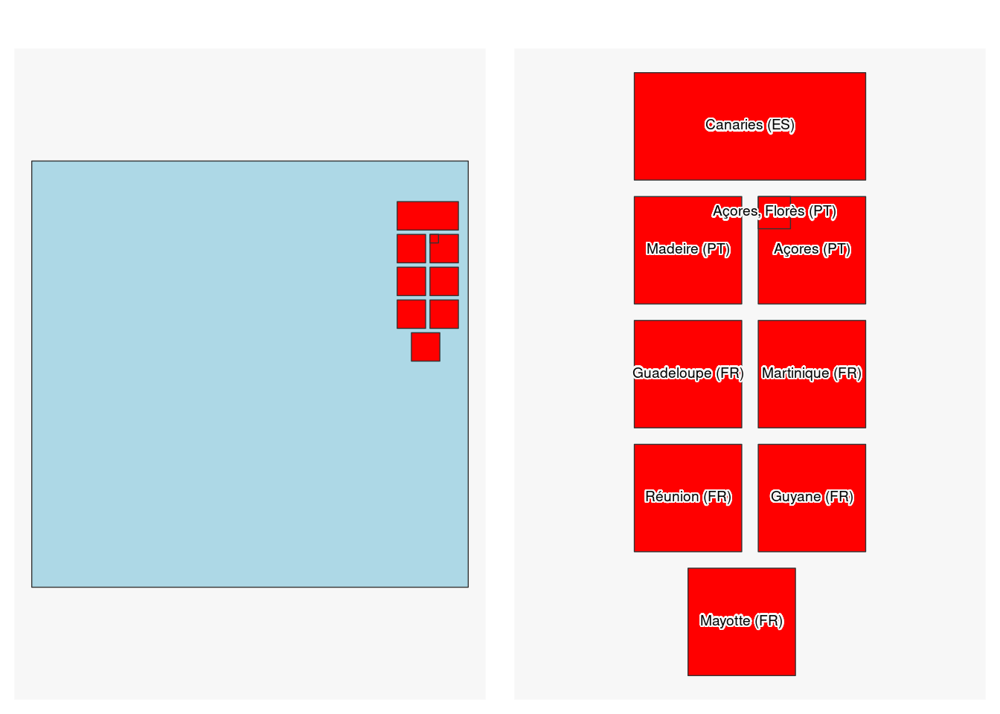
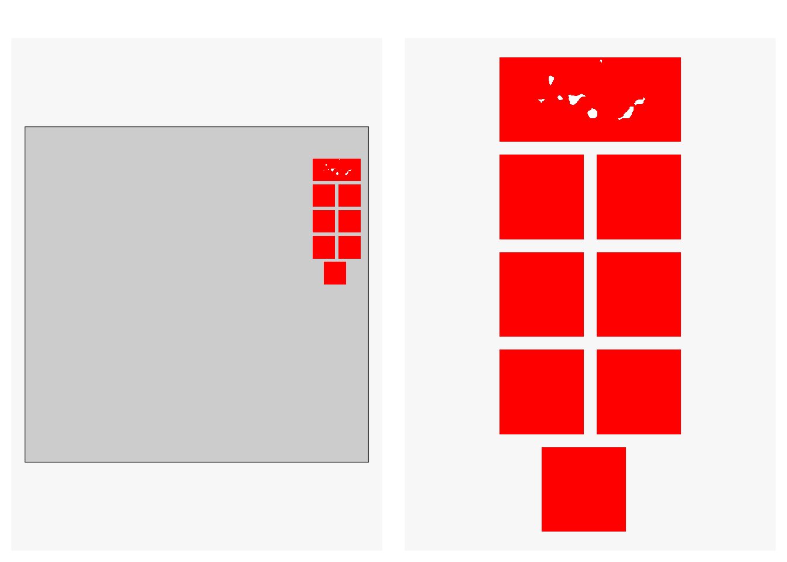
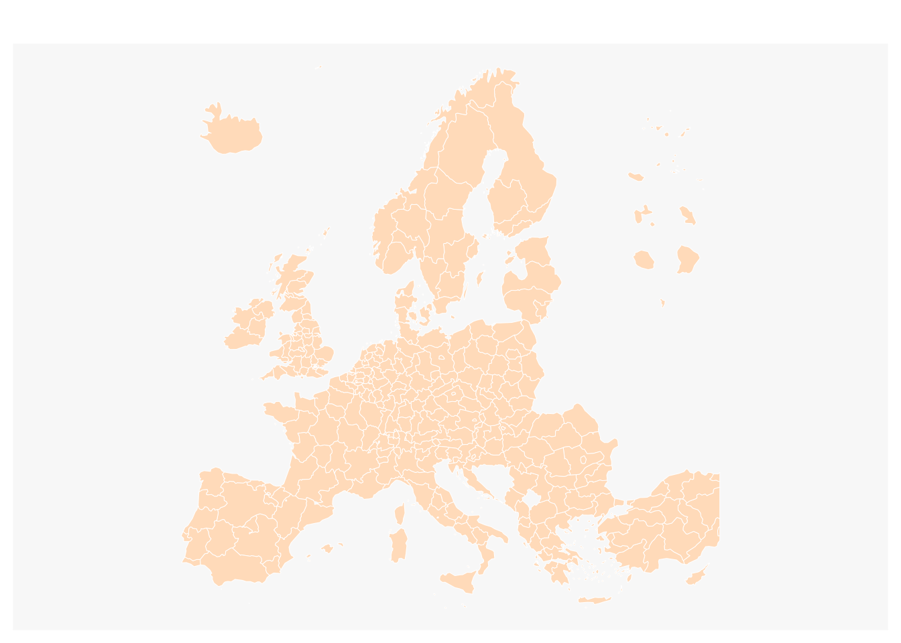
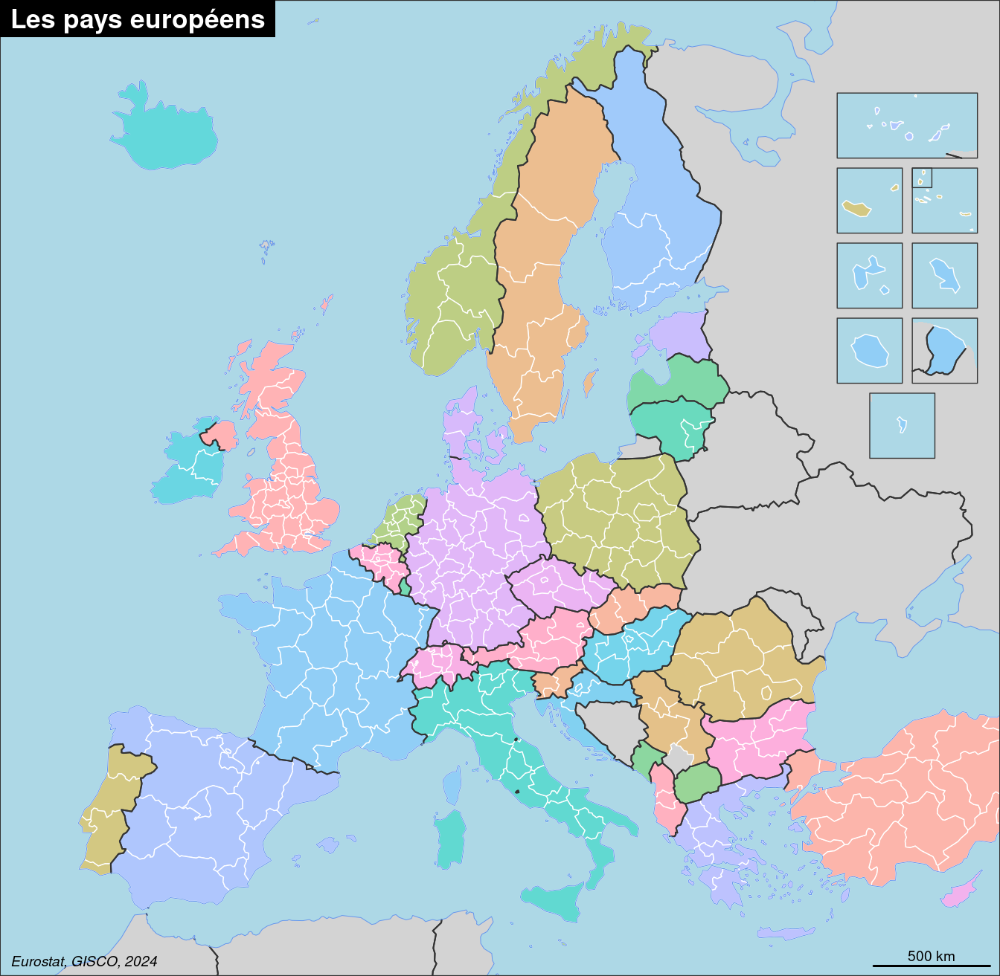
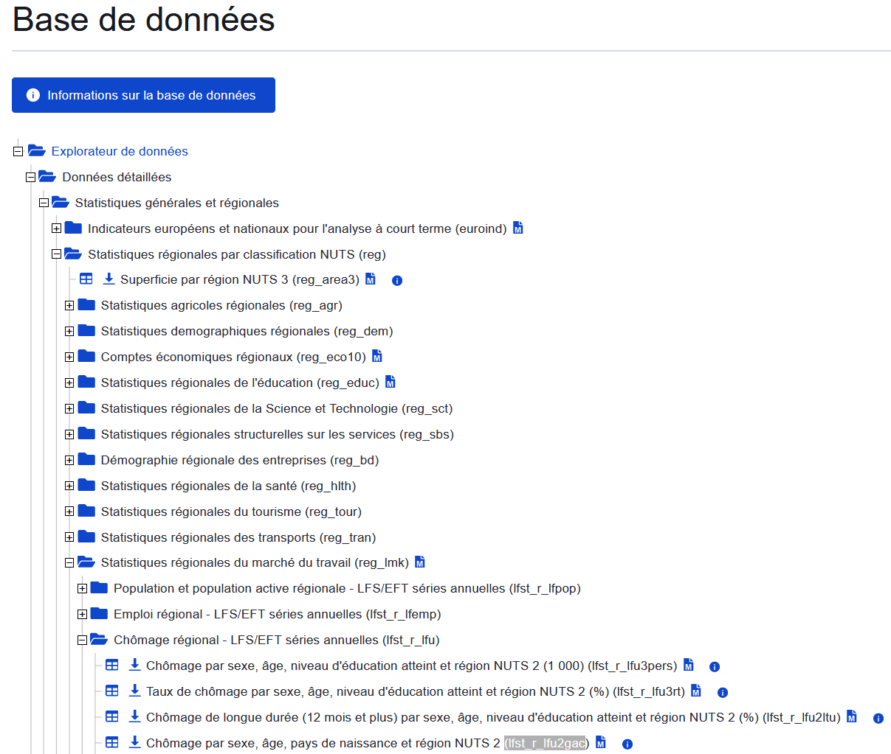
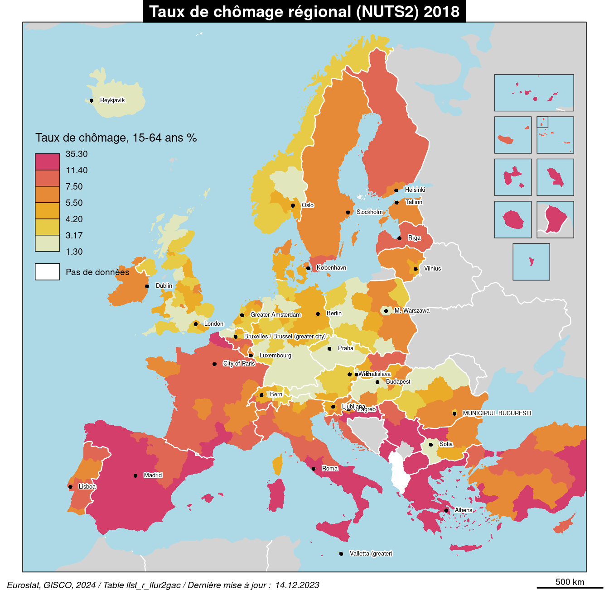

library(giscoR)
library(eurostat)
library(sf)
#devtools::install_github("riatelab/mapinsetr", force = TRUE)
library(mapinsetr)
library(mapsf)
library(reshape2)Un modèle cartographique pour intégrer les territoires périphériques avec R
Avec les librairies mapinsetr, giscoR, eurostat, sf et mapsf
Les Départements et Régions d’Outre Mer (DROM), les Canaries, les Açores et Madère font partie intégrante de l’Union Européenne. Pourtant les utilisateurs de R se confrontent souvent à la difficulté de trouver une solution technique opérationnelle pour représenter ces territoires sur le même plan que ceux de l’Europe continentale. En témoigne la représentation cartographique de la vignette associée au librairie giscoR, qui permet l’import des couches géographiques de référence au niveau européen. Dans cette vignette la représentation cartographique est centrée sur l’Europe continentale, les territoires périphériques sont exclus de la représentation. Comment dépasser cette limitation technique forte de sens d’un point de vue politique ?
Une solution existe grâce à la librairie mapinsetr et permet d’extraire sans trop de difficultés des territoires inclus dans des masques et de les translater dans le plan de la carte principale (inset). Nous montrons ici une procédure possible, qui conduit à la réalisation d’une carte du taux de chômage régional incluant l’ensemble des territoires européens.
Une attention particulière est ici portée pour la réalisation d’un modèle cartographique, comprenant plusieurs couches d’habillage cartographique.
Notons que ces programmes R ont permis la réalisation des modèles cartographiques proposés par l’application de cartographie thématique Magrit.
4 autres librairies sont ici mobilisées hormis mapinsetr et giscoR:
sfpour les opérations sur les géométries (reprojections, intersections, etc). La plupart des fonctions mobilisées dansmapinsetrreposent sur cette librairie.eurostat, pour importer les données de référence au niveau européen.mapsfpour les représentations cartographiques qui en découlent.reshape2, à la marge, pour manipuler les tableaux de données qui proviennent de la librairieeurostat.
Paramétrage
Import des géométries de référence
Les géométries de référence sont importées avec la librairie giscoR. La question se pose de la façon de procéder pour représenter les territoires ultra-périphériques, comme les DROM, Madère ou les Canaries de façon optimale dans un modèle cartographique.
nuts <- gisco_get_nuts(epsg = "3035", nuts_level = 2, resolution = "20", year = "2021",
cache_dir = "input", cache = TRUE)
mf_map(nuts)
Commençons par définir l’emprise spatiale de notre modèle cartographique. La fonction locator() est utile pour extraire les couples de coordonnées à partir d’un plot ou d’une carte. Sur une carte il s’agira du système de coordonnées géographiques de l’objet spatial importé, ici celui de référence de l’Union Européenne (ETRS89-extended / LAEA Europe, ESPG:3035)
# Définition des limites du modèles cartographique (800 * 1000)
bbox <- st_bbox(obj = c(xmin = 1920000, ymin = 1300000, xmax = 6600000, ymax = 5500000),
crs = 3035)
frame <- st_sf(geom = st_as_sfc(bbox))
mf_map(frame, col = "lightblue")
mf_map(nuts, col = "peachpuff", border = "white",add = TRUE)
L’emprise spatiale apparaît adéquate pour focaliser la représentation cartographique sur les territoires de l’Europe continentale. Elle est pensée pour avoir une résolution de 800 * 1000 en hauteur / largeur et pour prévoir un espace à l’ouest de l’Europe qui sera utile pour positionner une légende à la carte à posteriori.
Mais comment ne pas omettre nos territoires périphériques ?
mapinsetr
La librairie mapinsetr permet d’extraire, transformer et reprojeter des territoires ciblés, appelés insets.
Pour réaliser un inset, plusieurs paramètres sont à définir :
- Créer un masque (mask) pour extraire les territoires d’intérêt. On peut éventuellement les reprojeter dans leur projection cartographique locale de référence.
- Créer un encart (inset) où seront présentés les territoires du masque. Ici nous souhaitons les repositionner le plus harmonieusement possible à l’Est des territoires européens.
- Fusionner le fond de carte d’origine et l’encart. Les territoires des encarts disposeront alors de nouvelles coordonnées géographiques pour apparaître dans le fond de carte principal.
Dans notre cas de figure, cela nécessite une réflexion (et plusieurs tests !), qui avère être un compromis entre :
- L’emprise géographique réelle des territoires périphériques.
- Le fait que l’on souhaite un modèle cartographique harmonieux, où les encarts sont alignés, de taille comparable et régulièrement espacés.
Le bloc de code ci-dessous est une proposition opérationnelle. Les encarts sont de largeur et longueur comparables (box_area) avec un espacement (box_space) similaire. Petite subtilité pour les Canaries, vu l’emprise de ce territoire l’emprise couvrira en largeur 2 insets + l’espacement entre les boîtes. x_min et y_max définit la localisation du bord supérieur gauche (ou le plus au nord et le plus à l’ouest dans le système de coordonnées européen) du premier encart.
On peut aussi tout à fait générer ces paramètres dans un fichier tabulaire externe. Une feuille et un crayon étant généralement d’une aide précieuse pour réfléchir à la mise en place de ces paramètres !
Paramétrage
# Nombre d'insets
n <- 9
# Préparer le tableau requis
df <- data.frame(matrix(ncol = 1, nrow = n))
names(df) <- c("name")
# Nom des territoires
df$name <- c("Canaries (ES)", "Madeire (PT)", "Açores (PT)",
"Açores, Florès (PT)", "Guadeloupe (FR)", "Martinique (FR)",
"Réunion (FR)", "Guyane (FR)", "Mayotte (FR)")
# Masques (Coordonnées géographiques de la localisation en long/lat des territoires périphériques)
df$m_xmin <- c(-18.4, -17.35, -28.9, -31.4, -62.05, -61.44, 54.99, -55.5, 44.5)
df$m_ymin <- c(27.4, 32.55, 36.8, 39.3, 15.64, 14.19, -21.61, 1.8, -13.5)
df$m_xmax <- c(- 13.3, -16.2, -24.8, -30.9, -60.99, -60.6, 56.06, -50.8, 45.8)
df$m_ymax <- c(29.5, 33.2, 40.2, 39.8, 16.71, 15.09, -20.64, 6, -12.2)
df$m_epsg <- 4326
df$m_epsg_loc <- c(3035, 2191, 3063, 3063, 5490, 5490, 2975, 2972, 4471)
# Insets ----
# Paramètres généraux des boîtes (2 colonnes * 4 boîtes régulièrement espacées) ----
box_area <- 280000 # largeur / hauteur
x_min <- 5900000 # Xmin pour toutes les boîtes de la première colonne
y_max <- 5100000 # Ymax (haut des boîtes)
box_space <- 43000 # espace entre les boîtes
# Futur réceptacle des coordonnées des insets
df$i_xmin <- NA
df$i_ymin <- NA
df$i_xmax <- NA
df$i_ymax <- NA
# Canaries
xmin <- x_min
xmax <- xmin + (box_area * 2) + box_space
ymax <- y_max
ymin <- ymax - box_area
df[1, c(8:11)] <- c(xmin, ymin, xmax, ymax)
# Madère
xmin <- x_min
xmax <- xmin + box_area
ymax <- ymin - box_space
ymin <- ymax - box_area
df[2, c(8:11)] <- c(xmin, ymin, xmax, ymax)
## Açores (main) ----
xmin <- xmax + box_space
xmax <- xmin + box_area
df[3, c(8:11)] <- c(xmin, ymin, xmax, ymax)
## Açores (second) ----
xmax <- xmin + (.3 * (xmax - xmin))
ymin2 <- ymax - (.3 * (ymax - ymin))
df[4, c(8:11)] <- c(xmin, ymin2, xmax, ymax)
## Guadeloupe ----
xmin <- x_min
xmax <- xmin + box_area
ymax <- ymin - box_space
ymin <- ymax - box_area
df[5, c(8:11)] <- c(xmin, ymin, xmax, ymax)
## Martinique ----
xmin <- xmax + box_space
xmax <- xmin + box_area
df[6, c(8:11)] <- c(xmin, ymin, xmax, ymax)
## Réunion ----
xmin <- x_min
xmax <- xmin + box_area
ymax <- ymin - box_space
ymin <- ymax - box_area
df[7, c(8:11)] <- c(xmin, ymin, xmax, ymax)
## Guyane ----
xmin <- xmax + box_space
xmax <- xmin + box_area
df[8, c(8:11)] <- c(xmin, ymin, xmax, ymax)
## Mayotte ----
xmin <- x_min + (box_area / 2)
xmax <- xmin + box_area
ymax <- ymin - box_space
ymin <- ymax - box_area
df[9, c(8:11)] <- c(xmin, ymin, xmax, ymax)
# EPSG (inset)
df$i_epsg <- 3035Voici le tableau qui en résulte. Avec respectivement et pour chaque territoire cible :
m_xmin,m_ymin,m_xmax,m_ymax: les coordonnées géographiques (rectangulaires) des masques dans un système de coordonnées de référence explicite (m_epsg).m_epsg_loc: la projection locale la plus adaptée pour ces territoires.i_xmin,i_ymin,i_xmax,i_ymax: les coordonnées géographiques qui permettront le positionnement de ces territoires dans le modèle cartographique principal, dans un système de coordonnées de référence explicite (i_epsg).
knitr::kable(df)| name | m_xmin | m_ymin | m_xmax | m_ymax | m_epsg | m_epsg_loc | i_xmin | i_ymin | i_xmax | i_ymax | i_epsg |
|---|---|---|---|---|---|---|---|---|---|---|---|
| Canaries (ES) | -18.40 | 27.40 | -13.30 | 29.50 | 4326 | 3035 | 5900000 | 4820000 | 6503000 | 5100000 | 3035 |
| Madeire (PT) | -17.35 | 32.55 | -16.20 | 33.20 | 4326 | 2191 | 5900000 | 4497000 | 6180000 | 4777000 | 3035 |
| Açores (PT) | -28.90 | 36.80 | -24.80 | 40.20 | 4326 | 3063 | 6223000 | 4497000 | 6503000 | 4777000 | 3035 |
| Açores, Florès (PT) | -31.40 | 39.30 | -30.90 | 39.80 | 4326 | 3063 | 6223000 | 4693000 | 6307000 | 4777000 | 3035 |
| Guadeloupe (FR) | -62.05 | 15.64 | -60.99 | 16.71 | 4326 | 5490 | 5900000 | 4174000 | 6180000 | 4454000 | 3035 |
| Martinique (FR) | -61.44 | 14.19 | -60.60 | 15.09 | 4326 | 5490 | 6223000 | 4174000 | 6503000 | 4454000 | 3035 |
| Réunion (FR) | 54.99 | -21.61 | 56.06 | -20.64 | 4326 | 2975 | 5900000 | 3851000 | 6180000 | 4131000 | 3035 |
| Guyane (FR) | -55.50 | 1.80 | -50.80 | 6.00 | 4326 | 2972 | 6223000 | 3851000 | 6503000 | 4131000 | 3035 |
| Mayotte (FR) | 44.50 | -13.50 | 45.80 | -12.20 | 4326 | 4471 | 6040000 | 3528000 | 6320000 | 3808000 | 3035 |
Création des masques
On crée une fonction pour transformer ce jeu de données de paramétrage avec des coordonnées géographiques (xmin, xmax, ymin, ymax) en objet géographique avec la fonction make_poly. La fonction requiert la projection utilisée pour spécifier ces coordonnées (crs) et optionnellement les noms des boîtes ainsi que leur projection locale optimale.
make_poly <- function(x, xmin, ymin, xmax, ymax, crs, epsg_loc = NULL,
name = NULL){
# Préparation fichier de sortie
out <- data.frame(matrix(nrow = 1, ncol = 2))
out <- st_sf(out, geometry = st_sfc(lapply(1, function(x) st_multipolygon())))
colnames(out)[1:2] <- c("name", "epsg")
st_crs(out) <- crs
# Créer les polygones à partir des coordonnées spécifiées
for (i in 1:nrow(x)){
bbox <- st_bbox(obj = c(xmin = x[i, xmin], ymin = x[i, ymin],
xmax = x[i, xmax], ymax = x[i, ymax]))
out[i,"geometry"] <- st_as_sfc(bbox)}
# Associer les attributs utiles
out$epsg <- epsg_loc
out$name <- name
return(out)
}Les masques recoupent bien nos territoires périphériques.
mask <- make_poly(x = df,
xmin = "m_xmin", ymin = "m_ymin", xmax = "m_xmax", ymax = "m_ymax",
crs = unique(df$m_epsg),
epsg_loc = df$m_epsg_loc)
mf_map(mask, col = "red", border = "white")
mf_map(st_transform(nuts, 4326), border = "white", add = TRUE)
Gérer les projections locales
Chaque territoire est reprojeté dans sa projection locale de référence.
# Exemple des Canaries
can_m <- mask[1,]
# Entrée, Canaries en 4326
par(mfrow = c(1,2))
mf_map(can_m, col = "red", border = "white")
mf_map(st_transform(nuts, 4326), border = NA, add = TRUE)
# Prise en compte de la projection locale pour le masque et les territoires
can_m_proj <- st_transform(can_m, mask[1, "epsg", drop = TRUE])
can_proj <- st_transform(nuts, mask[1, "epsg", drop = TRUE])
mf_map(can_m_proj, col = "red", border = "white")
mf_map(can_proj, add = TRUE, border = NA)
Générer les insets
Les insets sont positionnés dans le modèle cartographique principal. Nous avons ici décidé de les positionner sur la partie Est du modèle cartographique (en Russie). La légende des représentations de cartographie thématique à venir étant pensées pour se positionner à l’ouest du modèle, dans l’océan Atlantique.
inset <- make_poly(x = df, name = df$name,
xmin = "i_xmin", ymin = "i_ymin", xmax = "i_xmax", ymax = "i_ymax",
crs = unique(df$i_epsg))
par(mfrow = c(1,2))
mf_map(frame, col = "lightblue")
mf_map(inset, col = "red", add = TRUE)
mf_map(inset, col = "red")
mf_label(inset, var = "name", col = "black", cex = .6, halo = TRUE)
Avec l’ensemble de ces paramètres, les territoires peuvent être finalement extrait et reprojeté dans l’inset préalablement défini grâce à la fonction m_r. Voici ce que cela donne avec les Canaries.
# Les masques sont définis en 4326, on modifie donc la projection d'entrée
can_proj <- st_cast(can_proj, "MULTIPOLYGON")
can_i <- m_r(x = can_proj, mask = can_m_proj, y = inset[1,])
par(mfrow = c(1,2))
mf_map(frame)
mf_map(inset, col = "red", border = NA, add = TRUE)
mf_map(can_i, col = "white", border = NA, add = TRUE)
mf_map(inset, col = "red", border = NA)
mf_map(can_i, col = "white", border = NA, add = TRUE)
Construction du modèle cartographique
Après avoir décomposé les différentes étapes, repartons des géométries NUTS2 initiales.
La fonction multiple_m_r est créée pour réaliser l’ensemble des étapes décrites ci-dessous à partir du fichier de paramètre. C’est en quelque sorte une évolution de la fonction m_r, cœur du librairie mapinsetr, qui le permet pour une seule boîte.
La fonction prend en entrée :
x: la couche géographique d’entrée, correspondant ici aux différentes couches géographiques qui va constituer notre modèle cartographique (NUTS2, pays européens et du voisinage de l’Europe, villes européennes).param: le fichier de paramètres décrit plus haut.bind: si les insets doivent être fusionnés àx(TRUE) ou non (FALSE). Six = TRUEil faut spécifier le nom de cette couche géographique.frame: les limites de l’emprise du modèle cartographique.xsera intersectée avec l’emprise duframe.return_k: la conséquence induite par l’extraction et le repositionnement des territoires dans le modèle sur leur surface initiale (rapport de surface).
multiple_m_r <- function(x, param, bind = FALSE, bind_layer = NULL, frame,
return_k = FALSE){
# Renommage des fichiers
df <- param
input <- x
# Préparation du fichier de sortie
out <- data.frame(matrix(nrow = 1, ncol = ncol(x)-1))
colnames(out) <- colnames(x)[1:ncol(x)-1]
# Gérer les différents types d'objet en entrée
type <- st_geometry_type(x, by_geometry = FALSE)
if(type %in% c("MULTIPOLYGON", "GEOMETRY")){
out <- st_sf(out, geometry = st_sfc(lapply(1, function(x) st_multipolygon())))
} # Si couche à extraire est de type polygone
if(type == "POINT"){
out <- st_sf(out, geometry = st_sfc(lapply(1, function(x) st_point())))
} # Ou point
# Projection des xmin, xmax, ymin, ymax
st_crs(out) <- unique(df$i_epsg)
# Préparation du fichier de sortie si l'on souhaite en sortie le facteur R
if(return_k == TRUE){
out <- data.frame(matrix(nrow = nrow(df), ncol = 2))
colnames(out) <- c(names(df)[1], "k")
out[, "name"] <- df[,"name"]
}
# Reproduire l'ensemble des étapes utiles à l'extraction / reprojection
for (i in 1 : nrow(df)){
# Extraire la projection locale
epsg_loc <- df[i, "m_epsg_loc"]
# Créer le masque à partir des paramètres
mask <- make_poly(x = df[i,], crs = df[i, "m_epsg"],
xmin = "m_xmin", ymin = "m_ymin", xmax = "m_xmax", ymax = "m_ymax")
# Transformer la couche d'entrée dans la projection spécifiée (surtout utiles pour les pays du Monde)
x <- st_transform(input, df[i, "m_epsg"])
st_agr(x) <- "constant"
# Ne conserver que le voisinage du masque (200 km)
x <- st_intersection(x, st_buffer(mask, 200000))
# Gestion des géométries
if(type %in% c("MULTIPOLYGON", "GEOMETRY")){
x <- st_cast(x, "MULTIPOLYGON")
}
# Transformation dans la projection locale
mask <- st_transform(mask, epsg_loc)
x <- st_transform(x, epsg_loc)
# Créer l'inset
inset <- make_poly(x = df[i,], crs = df[i, "i_epsg"],
xmin = "i_xmin", ymin = "i_ymin", xmax = "i_xmax", ymax = "i_ymax")
# Resize & moove
if(return_k == FALSE){
if(nrow(x) > 0){
x <- m_r(x = x, mask = mask, y = inset, return_k = FALSE)
out <- rbind(x, out)
}
}
# Si l'on souhaite le facteur k
if(return_k == TRUE){
x <- m_r(x = x, mask = mask, y = inset, return_k = TRUE)
out[i,"k"] <- x
}
}
# Joindre ou non ces résultats à une couche de sortie
if(bind == TRUE){
bind_layer <- st_transform(input, unique(df$i_epsg))
out <- rbind(out, bind_layer)
st_agr(out) <- "constant"
out <- st_intersection(out, frame)
}
return(out)
}Appliquons cette fameuse fonction à notre couche de NUTS2.
nuts2 <- gisco_get_nuts(epsg = "3035", nuts_level = "2", resolution = "20",
year = "2021")
nuts3 <- gisco_get_nuts(epsg = "3035", nuts_level = "3", resolution = "20",
year = "2021")
nuts <- rbind(nuts2, nuts3)
nuts <- multiple_m_r(x = nuts, param = df, bind = TRUE, frame = frame)
mf_map(nuts, col = "peachpuff", border = "white", lwd = .5)
Nous agrégeons les éventuelles unités doublonnées pour s’assurer d’un code unique.
nuts <- aggregate(nuts, by = list(NUTS_ID = nuts$NUTS_ID),
FUN = head, 1)On peut mesurer l’effet provoqué par le redimensionnement des territoires concernés avec l’argument return_k : la Guyane correspond à 53 % de sa taille initiale. A l’inverse, Mayotte est agrandie de 194 %. Il est nécessaire de rappeler que ce type de modèle implique forcément une distorsion potentiellement importante de la surface réelle des territoires si leur surface est hétérogène et que l’on souhaite avoir des insets de taille à peu près identique, comme c’est le cas ici.
input <- gisco_get_nuts(epsg = "3035", nuts_level = "2", resolution = "20",
year = "2021")
k <- multiple_m_r(x = input, param = df, return_k = TRUE)
k name k
1 Canaries (ES) 0.7249161
2 Madeire (PT) 2.5731255
3 Açores (PT) 0.7409164
4 Açores, Florès (PT) 1.4607432
5 Guadeloupe (FR) 2.3487373
6 Martinique (FR) 2.7892280
7 Réunion (FR) 2.4970494
8 Guyane (FR) 0.5351131
9 Mayotte (FR) 1.9464522Extraction de la géométrie des insets (boîtes).
boxes <- make_poly(df, crs = unique(df$i_epsg),
xmin = "i_xmin", ymin = "i_ymin", xmax = "i_xmax", ymax = "i_ymax")Quelques couches d’habillage pour embellir la carte (pays limitrophes) ne seraient pas de refus ! La procédure est identique, avec une autre couche géographique d’entrée. Pour des questions d’habillage (optimisation de la superposition des couches), nous n’allons pas joindre les sorties de la fonction multiple_m_r à la couche d’entrée.
country <- gisco_get_countries(year = "2020", resolution = "20")
country <- st_transform(country, 3035)
country_box <- multiple_m_r(x = country, param = df, bind = FALSE, frame = frame)
country <- st_intersection(country, frame)
borders <- cartography::getBorders(country)
borders2 <- cartography::getBorders(country_box)
borders <- rbind(borders, borders2)Voici le modèle qui en résulte ! Nous utilisons ici les fonctionnalités de représentation de la librairie mapsf.
Nous extrayons enfin les capitales européennes à des fins d’habillage cartographique. Nous ne conservons pas les capitales des petits pays pour lesquels nous n’avons pas de données et celle qui se superposerait aux boîtes (Moscou).
library(rnaturalearth)
cities <- ne_download(scale = 110, type = "populated_places", category = "cultural")Reading layer `ne_110m_populated_places' from data source
`C:\Users\Ronan\AppData\Local\Temp\RtmpKW3I8F\ne_110m_populated_places.shp'
using driver `ESRI Shapefile'
Simple feature collection with 243 features and 137 fields
Geometry type: POINT
Dimension: XY
Bounding box: xmin: -175.2206 ymin: -41.29207 xmax: 179.2166 ymax: 64.14346
Geodetic CRS: WGS 84cities <- st_transform(cities, 3035)
cities <- st_intersection(cities, frame)
cities <- cities[,"NAME"]
cities <- cities[!cities$NAME %in% c("Vatican City",
"San Marino",
"Monaco",
"Andorra",
"Moscow",
"The Hague",
"Casablanca",
"Istanbul"),]Pour optimiser l’affichage de la carte (plein écran, sans marge) on utilise la fonction mf_get_ratio qui permet d’obtenir la largeur et la hauteur de l’emprise de la carte (à paramétrer dans les chunks). L’argument expandBB est utilisé pour supprimer les marges (4 % autour de la carte par défaut).
# Voir les dimensions de la carte à partir du frame
mf_get_ratio(x = frame, width = 7, expandBB = rep(-.04, 4)) [1] 7.00 6.54par(mfrow = c(1,1))
mf_theme(
bg = "white", fg = "black", mar = c(0, 0, 0, 0),
tab = TRUE, inner = TRUE, line = 1.3, cex = 1.1, font = 2
)
mf_map(frame, col = "lightblue", expandBB = rep(-.04, 4), border = NA)
mf_map(country, col = "lightgrey", border = NA, add = TRUE)
mf_map(boxes, col = "lightblue", border = NA, add = TRUE)
mf_map(country_box, col = "lightgrey", border = NA, add = TRUE)
mf_map(nuts, col = "peachpuff", border = "white", lwd = .25, add = TRUE) # Future couche possible pour la
#représentation carto
mf_map(borders, col = "white", add = TRUE)
mf_map(cities, pch = 21, col = NA, bg = "black", cex = .4, add = TRUE) # Future couche possible pour la
#représentation carto
mf_label(cities, var = "NAME", halo = TRUE, cex = .4, pos = 2)
mf_map(boxes, col = NA, add = TRUE)
mf_map(frame, col = NA, lwd = 1, add = TRUE)
mf_credits("Source : Eurostat, GISCO, 2024")
mf_scale(size = 500)
mf_title("Map template")
Pour condenser le code de représentations cartographiques futures qui appellent plusieurs couches géographiques, un peu à la façon d’un SIG, on peut condenser le code dans des fonctions.
# Couches d'habillage sous la carte thématique
map_background <- function(x){
mf_map(frame, col = "lightblue", expandBB = rep(-.04, 4), border = NA)
mf_map(country, col = "lightgrey", border = NA, add = TRUE)
mf_map(boxes, col = "lightblue", border = NA, add = TRUE)
mf_map(country_box, col = "lightgrey", border = NA, add = TRUE)
}
# Couches d'habillage sur la carte thématique
map_foreground <- function(sources, title){
mf_map(borders, col = "white", lwd = 1, add = TRUE)
mf_map(boxes, col = NA, add = TRUE)
mf_map(frame, col = NA, lwd = 1, add = TRUE)
mf_credits(txt = sources)
mf_scale(size = 500)
mf_title(txt = title)
}La carte thématique mise en page avec notre modèle cartographique pourra alors être réalisée avec une longueur de code minimale.
# Un code condensé pour une jolie carte
map_background()
mf_map(x = nuts, var = "CNTR_CODE", type = "typo", pal = "Set 3",
border = "white", leg_pos = NA, add = TRUE)
map_foreground(title = "Les pays européens", source = "Eurostat, GISCO, 2024")
Enrichissement des couches géographiques avec des données Eurostat
Une fois ce modèle préparé, on peut aisément le mobiliser avec des données socio-économiques en utilisant la librairie eurostat, qui comme son nom le suggère, permet d’accéder au contenu de la base de données Eurostat.
Nous allons ici l’appliquer pour en enrichir les couches géographiques NUTS3, NUTS2 et des villes avec des données de population et de surface.
Une rapide exploration de l’organisation des données mises à disposition par Eurostat permet d’identifier le nom des tables Eurostat d’intérêt : reg_area3 pour la surface et demo_r_pjanaggr3 pour la surface totale. 
Il n’y a pas une méthode unique pour appareiller des données Eurostat à une couche géographique de référence.
L’idée générale proposée ici consiste à filtrer les dimensions de la table Eurostat pour aboutir à l’indicateur souhaité et passé au format long : les lignes correspondant aux unités territoriales et les colonnes aux différentes années de référence disponibles dans la table.
library(eurostat)
df <- get_eurostat("reg_area3", time_format = "num") # Telecharger la table ESTAT
indexed 0B in 0s, 0B/s
indexed 2.15GB in 0s, 2.15GB/s
df <- df[df$landuse == "TOTAL",]
df <- dcast(df, geo ~ TIME_PERIOD, value.var = "values") # Redimensionnement de la table au format geo
head(df) geo 2013 2014 2015 2016 2017 2018 2019 2020 2021 2022 2023 2024
1 AL NA NA NA NA NA NA NA NA 28791 28791 28791 28791
2 AL0 NA NA NA NA NA NA NA NA 28791 28791 28791 28791
3 AL01 NA NA NA NA NA NA NA NA 10820 10820 10820 10820
4 AL011 NA NA NA NA NA NA NA NA 1661 1661 1661 1661
5 AL012 NA NA NA NA NA NA NA NA 3528 3528 3528 3528
6 AL013 NA NA NA NA NA NA NA NA 2469 2469 2469 2469Les tables Eurostat peuvent être caractérisées par des valeurs manquantes du fait de provision de données hétérogènes entre les États Membres de l’Union Européenne ou de réformes territoriales. Pour palier à ceci et afin de disposer au maximum des données une fonction est créée pour prendre pour chaque unité territoriale de la table Eurostat la dernière année disponible.
La fonction crée ainsi une colonne spécifique qui contient l’année de référence majoritaire pour l’ensemble des unités territoriales (moyenne arrondie des années de référence de l’ensemble de la table) et la joint à une couche géographique cible.
La fonction prend en entrée la couche géographique cible (x) et son identifiant de jointure (x_id), le dataframe Eurostat contenant les dimensions filtrées au format long (df) ainsi que son identifiant de jointure (df_id) et le nom de la variable de sortie (var).
estat_last_year <- function(x, x_id, df, df_id, var){
# Filtrer sur les objets cibles
df <- df[df[,df_id] %in% x[,x_id, drop = TRUE],]
tmp <- df
# Chercher la dernière colonne sans valeur manquante
df[,var] <- df[cbind(1:nrow(df), max.col(!is.na(df), ties.method = 'last'))]
# Chercher cette année de référence
tmp$xx <- substr(colnames(tmp[max.col(!is.na(tmp), 'last')]), 1, 4)
# Définir pour nom de colonne la valeur moyenne arrondie pour l'ensemble des unités
colyearname <- paste0(var, "_", round(mean(as.numeric(tmp$xx), na.rm = TRUE), 0))
# Et l'affecter
names(df)[length(df)] <- colyearname
# S'assurer que c'est bien du numérique
df[,length(df)] <- as.numeric(df[,length(df)])
x <- merge(x, df[,c(1, length(df))], by.x = x_id, by.y = df_id, all.x = TRUE)
return(x)
}Application aux NUTS
On applique cette méthode au dataframe contenant les données régionales de surface et aux couches géographiques de référence NUTS2 et NUTS3.
nuts <-estat_last_year(x = nuts, x_id = "NUTS_ID", df = df, df_id = "geo",
var = "AREA") Pas de données pour la Serbie. On estime la surface totale avec la fonction st_area().
est <- nuts[is.na(nuts$AREA_2024),]
est$AREA_2024 <- as.numeric(st_area(est)/1000000)
nuts <- nuts[!is.na(nuts$AREA_2024),]
nuts <- rbind(nuts, est)Nous répétons l’opération avec les données de population. Il s’agit d’une autre table Eurostat.
df <- get_eurostat("demo_r_pjanaggr3", time_format = "num")
indexed 0B in 0s, 0B/s
indexed 2.15GB in 0s, 2.15GB/s
df <- df[df$sex == "T",]
df <- df[df$age == "TOTAL",]
df <- dcast(df, geo ~ TIME_PERIOD, value.var = "values")
nuts <- estat_last_year(x = nuts, x_id = "NUTS_ID",
df = df, df_id = "geo", var = "POP") Il est par ailleurs possible de récupérer des métadonnées fort utiles à rajouter à la carte avec la fonction get_eurostat_toc(), comme la date de dernière mise à jour.
id_estat <- "demo_r_pjanaggr3"
toc <- get_eurostat_toc(lang = "fr")
toc <- toc[toc$code == id_estat,]
last_update <- toc$last.update.of.data[1]Carte finale
Voici une carte mise en page sur la densité de population sur les territoires périphériques avec les territoires périphériques !
nuts$DENS <- nuts$POP_2023 / nuts$AREA_2024
# Fond de carte avec différentes couches d'habillage
map_background()
mf_map(nuts, var = "DENS", type = "choro", pal = "Heat 2", nbreaks = 6,
border = NA, add = TRUE, leg_title = "Densité de population\n(habitants/km²)",
leg_pos = c(2050000, 4700000), leg_no_data = "Pas de données")
mf_map(cities, pch = 21, col = NA, bg = "black", cex = .6, add = TRUE)
mf_label(cities, var = "NAME", halo = TRUE, cex = .4, pos = 4)
map_foreground(title = "Densité de population (NUTS3)",
sources = paste("Eurostat, GISCO, 2024 / Table", id_estat,
"/ Dernière mise à jour : ", last_update,
sep = " "))
Ce sont aussi les couches géographiques utilisées pour le modèle cartographique de Magrit. En ce sens on n’exporte que les champs utiles
# Ne conserver que les champs utiles
nuts <- nuts[,c("NUTS_ID", "NAME_LATN", "LEVL_CODE", "URBN_TYPE", "MOUNT_TYPE",
"AREA_2024", "POP_2023")]
unique(st_is_valid(nuts)) # TRUE
nuts2 <- nuts[nuts$LEVL_CODE == "2",]
nuts3 <- nuts[nuts$LEVL_CODE == "3",]
st_write(nuts2, "output/eu_template_nuts2.geojson")
st_write(nuts3, "output/eu_template_nuts3.geojson")
st_write(frame, "output/eu_template_frame.geojson")
country <- country[,c("CNTR_ID", "CNTR_NAME")]
unique(st_is_valid(country)) # TRUE
st_write(country, "output/eu_template_country.geojson")
country_box <- country_box[,c("CNTR_ID", "CNTR_NAME")]
unique(st_is_valid(country_box)) # TRUE
st_write(country_box, "output/eu_template_country_box.geojson")
unique(st_is_valid(boxes)) # TRUE
st_write(boxes, "output/eu_template_boxes.geojson")
unique(st_is_valid(borders)) # TRUE
borders <- st_set_crs(borders, 3035)
st_write(borders, "output/eu_template_borders.geojson")
st_write(cities, "output/eu_template_cities.geojson")sessionInfo()R version 4.4.1 (2024-06-14 ucrt)
Platform: x86_64-w64-mingw32/x64
Running under: Windows 10 x64 (build 19045)
Matrix products: default
locale:
[1] LC_COLLATE=French_France.utf8 LC_CTYPE=French_France.utf8
[3] LC_MONETARY=French_France.utf8 LC_NUMERIC=C
[5] LC_TIME=French_France.utf8
time zone: Europe/Paris
tzcode source: internal
attached base packages:
[1] stats graphics grDevices utils datasets methods base
other attached packages:
[1] rnaturalearth_1.0.1 reshape2_1.4.4 mapsf_0.11.0
[4] mapinsetr_0.3.0 sf_1.0-17 eurostat_4.0.0
[7] giscoR_0.6.0
loaded via a namespace (and not attached):
[1] xfun_0.47 httr2_1.0.5 htmlwidgets_1.6.4 tzdb_0.4.0
[5] vctrs_0.6.5 tools_4.4.1 ISOweek_0.6-2 generics_0.1.3
[9] parallel_4.4.1 curl_5.2.3 tibble_3.2.1 proxy_0.4-27
[13] fansi_1.0.6 RefManageR_1.4.0 pkgconfig_2.0.3 KernSmooth_2.23-24
[17] data.table_1.16.0 readxl_1.4.3 assertthat_0.2.1 lifecycle_1.0.4
[21] compiler_4.4.1 stringr_1.5.1 terra_1.7-78 codetools_0.2-20
[25] maplegend_0.1.0 htmltools_0.5.8.1 class_7.3-22 yaml_2.3.10
[29] crayon_1.5.3 pillar_1.9.0 tidyr_1.3.1 regions_0.1.8
[33] classInt_0.4-10 cartography_3.1.4 wk_0.9.3 countrycode_1.6.0
[37] tidyselect_1.2.1 digest_0.6.35 stringi_1.8.3 dplyr_1.1.4
[41] purrr_1.0.2 bibtex_0.5.1 rprojroot_2.0.4 fastmap_1.2.0
[45] grid_4.4.1 here_1.0.1 cli_3.6.3 magrittr_2.0.3
[49] utf8_1.2.4 e1071_1.7-16 withr_3.0.1 readr_2.1.5
[53] backports_1.5.0 rappdirs_0.3.3 bit64_4.5.2 lubridate_1.9.3
[57] timechange_0.3.0 rmarkdown_2.28 httr_1.4.7 bit_4.5.0
[61] cellranger_1.1.0 hms_1.1.3 evaluate_1.0.0 knitr_1.48
[65] s2_1.1.7 rlang_1.1.4 Rcpp_1.0.13 glue_1.7.0
[69] DBI_1.2.3 geojsonsf_2.0.3 xml2_1.3.6 vroom_1.6.5
[73] rstudioapi_0.16.0 jsonlite_1.8.8 R6_2.5.1 plyr_1.8.9
[77] units_0.8-5